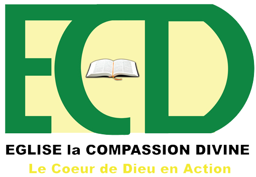

EGLISE LA COMPASSION DIVINE INTERNAITONALE
Accueil
Média
Calendrier
Activités
A Propos
Contacts
La constance dans la communion fraternelle
Développer
Les dons du Saint-Esprit
Développer
La constance dans la vie de prière
Développer
La constance dans l'évangélisation
Développer
Merci pour la suivie de nos guides et la lecture de nos enseignements. Soyez bénis !